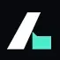
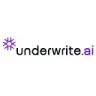

МолекулаАгрегаторы нейросетей
Молекула объединяет модели для текстов, изображений, видео и музыки. В одном аккаунте можно подобрать инструмент под этап работы, сохранить инструкции проекта и использовать готовые роли.
К задаче в МолекулеАкции и трейдинг: Проверьте источник котировок, задержку и способ расчёта показателей. Прогноз модели не гарантирует доход и не заменяет самостоятельную оценку рис
В Молекуле можно упорядочить исходные сведения и вопросы для самостоятельной проверки. Подготовка таблицы не заменяет финансовый анализ и не даёт достоверного прогноза движения котировок.
Подготовь структуру карточки для разбора компании: отчётный период, выручка, задолженность, источники цифр и риски. Оставь пустыми отсутствующие данные; торговых рекомендаций не давай.

Молекула объединяет модели для текстов, изображений, видео и музыки. В одном аккаунте можно подобрать инструмент под этап работы, сохранить инструкции проекта и использовать готовые роли.
К задаче в Молекуле
Intellectia AI используют, чтобы разбирать финансовые показатели и рыночные данные. Ещё одно направление работы: собирать видео с цифровым ведущим.
Для «Morpher AI» сначала определите свою задачу и требуемый результат. Карточка относится к направлению «Финансы».

StockGPT предназначен для поиска сведений в отчётности Tesla через вопросы к ИИ. Запрос можно привязать к отчётному периоду, чтобы разбирать финансовые материалы компании. Ответы требуют сверки с документами: инструмент не предназначен для прогнозирования будущих результатов или принятия инвестиционных решений вместо пользователя.
«Alvatix» представлен в разделе «Финансы». При выборе проверьте нужную операцию и условия работы с результатом.
Betegy используют, чтобы разбирать финансовые показатели и рыночные данные.

Prospero.ai используют для задачи: разбирать финансовые показатели и рыночные данные. Ещё одно направление работы: подготавливать аналитические материалы для рабочих решений.
«Quadency» представлен в разделе «Автоматизация». При выборе проверьте нужную операцию и условия работы с результатом.
«Quick Intel» помогает искать признаки мошеннических действий в данных.
«ScriptGenAI» помогает готовить изменения программного кода.

StockGeist относится к инструментам, которые помогают разбирать финансовые показатели и рыночные данные. Ещё одно направление работы: исследовать тему и разбирать найденную информацию.

TrendSpider используют для задачи: писать и изменять программный код. Ещё одно направление работы: исследовать тему и разбирать найденную информацию.
Ultralgo использует ИИ в работе с торговыми стратегиями и портфелем. Платформа объединяет разбор рисков и изменение торговых параметров, а также наблюдение за портфелем. В описании представлены ИИ-боты и совместная работа с помощником для пользователей с разными подходами к торговле.
Сравнивать «ailtra AI» с другими инструментами раздела «Финансы» удобнее на одинаковом исходном материале.
Сравнивать «DeFi Lens» с другими инструментами раздела «Анализ данных» удобнее на одинаковом исходном материале.
Сравнивать «Flow Trade» с другими инструментами раздела «Анализ данных» удобнее на одинаковом исходном материале.
Сравнивать «KvantsAI» с другими инструментами раздела «Финансы» удобнее на одинаковом исходном материале.
«Morphlin» представлен в разделе «Финансы». При выборе проверьте нужную операцию и условия работы с результатом.

Dimers рассчитан на задачи, где нужно исследовать тему и разбирать найденную информацию. Ещё одно направление работы: подготавливать план занятий под заданные условия.

Incite AI относится к инструментам, которые помогают разбирать финансовые показатели и рыночные данные. Ещё одно направление работы: исследовать тему и разбирать найденную информацию.
«Pine Script Wizard» помогает готовить изменения программного кода.
Сравнивать «AI-signals» с другими инструментами раздела «Финансы» удобнее на одинаковом исходном материале.
Сравнивать «EOSI Finance» с другими инструментами раздела «Финансы» удобнее на одинаковом исходном материале.

В инструменте «Kavout» можно разбирать финансовые показатели и рыночные данные. Ещё одно направление работы: исследовать тему и разбирать найденную информацию.
Сравнивать «Leans AI» с другими инструментами раздела «Анализ данных» удобнее на одинаковом исходном материале.

Predictology относится к инструментам, которые помогают исследовать тему и разбирать найденную информацию. Ещё одно направление работы: разбирать финансовые показатели и рыночные данные.
QUINETICS помогает разрабатывать стратегии для криптовалют, акций и ETF без самостоятельного программирования. Инструмент анализирует результаты и использует ИИ для изменения стратегии. Предусмотрены передача сигналов брокерам и автоматизация между платформами, позволяющие связывать подготовку стратегии с её исполнением.

Danelfin анализирует акции и биржевые фонды с участием ИИ, формируя оценку по набору признаков. Пользователь может рассматривать оценку как отдельный показатель платформы при работе с информацией о фондовых инструментах. Анализ объединяет признаки выбранных акций и ETF в рамках предлагаемого продукта.

LevelFields относится к инструментам, которые помогают разбирать финансовые показатели и рыночные данные. Ещё одно направление работы: исследовать тему и разбирать найденную информацию.
Сравнивать «MEME is Game» с другими инструментами раздела «Криптовалюта» удобнее на одинаковом исходном материале.
«Chaplin» представлен в разделе «No-code и Low-code платформы». При выборе проверьте нужную операцию и условия работы с результатом.

В инструменте «Finalle AI» можно исследовать тему и разбирать найденную информацию. Ещё одно направление работы: разбирать финансовые показатели и рыночные данные.

Magnifi рассчитан на задачи, где нужно исследовать тему и разбирать найденную информацию. Ещё одно направление работы: разбирать финансовые показатели и рыночные данные.
Сравнивать «Sports AI.dev» с другими инструментами раздела «Акции и трейдинг» удобнее на одинаковом исходном материале.
Сравнивать «TradeUI» с другими инструментами раздела «Анализ данных» удобнее на одинаковом исходном материале.
UltraAlgo используют для задачи: разбирать финансовые показатели и рыночные данные.
«LunarCrush» представлен в разделе «Инвестиции». При выборе проверьте нужную операцию и условия работы с результатом.
Making Invest генерирует торговые сигналы для акций, валютного рынка и криптовалют с помощью ИИ. Основой служит анализ поступающих рыночных данных. Продукт предлагает интерпретацию для торгового сценария, а не известный будущий результат; качество сигнала и применимость к конкретной сделке требуют самостоятельной оценки пользователя.
Сравнивать «Moonbit» с другими инструментами раздела «Инвестиции» удобнее на одинаковом исходном материале.

В инструменте «Mysports.AI» можно подготавливать план занятий под заданные условия. Ещё одно направление работы: подготавливать аналитические материалы для рабочих решений.
Сравнивать «DefiPe» с другими инструментами раздела «Криптовалюта» удобнее на одинаковом исходном материале.

MindBridge AI относится к инструментам, которые помогают разбирать финансовые показатели и рыночные данные. Ещё одно направление работы: исследовать тему и разбирать найденную информацию.

Public.com используют для задачи: связывать действия в автоматизированный процесс. Ещё одно направление работы: собирать видео с цифровым ведущим.
Trade Ideas относится к инструментам, которые помогают писать и изменять программный код. Ещё одно направление работы: разбирать финансовые показатели и рыночные данные.

Underwrite.ai рассчитан на задачи, где нужно собирать рабочие инструменты и операции с данными. Ещё одно направление работы: разбирать финансовые показатели и рыночные данные.
Страница 1 из 1